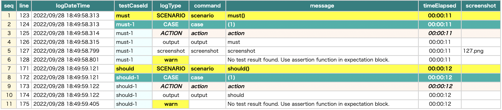

Filtering by priority (@Must, @Should, @Want )
You can put priority annotations @Must,@Should,@Want on test functions.
Example
Priority1.kt
(kotlin/tutorial/inaction/Priority1.kt)
package tutorial.inaction
import org.junit.jupiter.api.Order
import org.junit.jupiter.api.Test
import shirates.core.configuration.Testrun
import shirates.core.driver.function.output
import shirates.core.testcode.Must
import shirates.core.testcode.Should
import shirates.core.testcode.UITest
import shirates.core.testcode.Want
@Testrun("testConfig/android/androidSettings/testrun.properties")
class Priority1 : UITest() {
@Must
@Order(1)
@Test
fun must() {
scenario {
case(1) {
action {
output("must")
}
}
}
}
@Should
@Order(2)
@Test
fun should() {
scenario {
case(1) {
action {
output("should")
}
}
}
}
@Want
@Order(3)
@Test
fun want() {
scenario {
case(1) {
action {
output("want")
}
}
}
}
@Order(4)
@Test
fun none() {
scenario {
case(1) {
action {
output("none")
}
}
}
}
}
testrun.properties
You can set filters to determine whether the group should(or should not) be executed when the test executed. Set priority filter off to skip the priority group. For example, you can set filters as follows.
## Priority filter --------------------
want=false
none=false
Result
- must -> executed
- should -> executed
- want -> skipped
- none -> skipped
